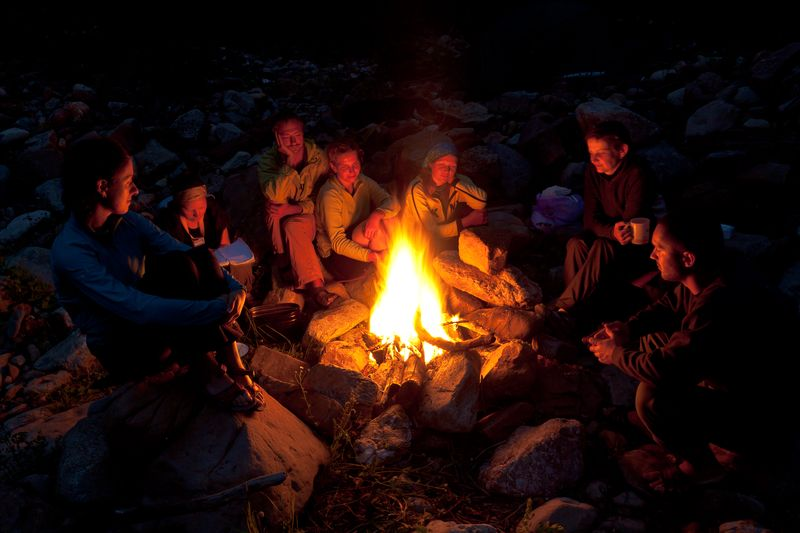

Vízió

Sok-sok évvel ezelőtt, még huszas éveimben (már nem emlékszem, hogy álomban, meditációban vagy teljesen éber állapotban) megjelent nekem egy gyönyörű kép:
Egy asztal körül ülünk, barátok, párok. Eszegetünk, beszélgetünk, és az egészet valami megfoghatatlan de mégis tapintható szeretet járja át. Egyfajta közös realitás, közös projekt köt minket össze, és elfogadásban, erőben, érettségben, szeretetben vagyunk együtt. És arra is határozottan emlékszem, hogy párokként erejük teljében lévő férfiak és nők ülünk ott, a párunk felé érzett bármiféle féltékenység nélkül, teljes bizalomban, tisztelettel és őszinteségben.
Talán csak egy illúzió ez a kép? Nem hiszem. Az utóbbi néhány évben számomra ez teremtődik meg szépen lassan, bodywörkös barátaimmal, és a Circlingen és Authentic Relatingen keresztül én hozom ezt létre a Csudahelyen személyesen és online is.
Vajon a saját jövőmet láttam? De azt csak úgy láthattam, ha már valahol létezett. Mindegy is. Ez a Vízióm! 😏
A jelenben egyébként kiterjedtebb, választott "családommal", törzsemmel képzelem ezt el úgy, hogy egy tábortűz körül ülünk...